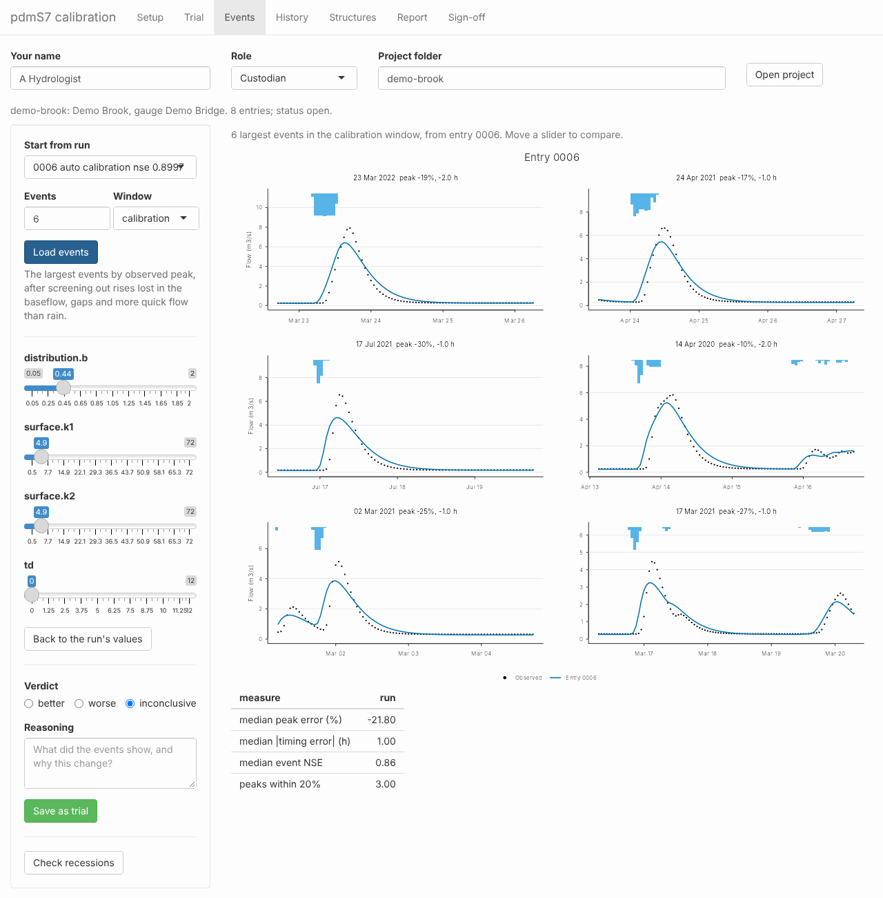
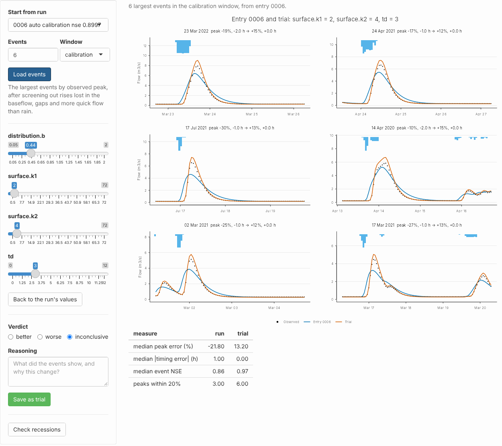
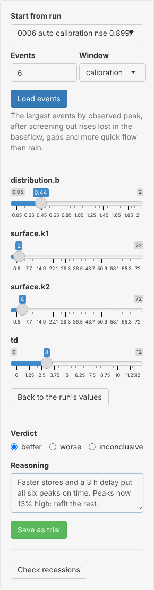
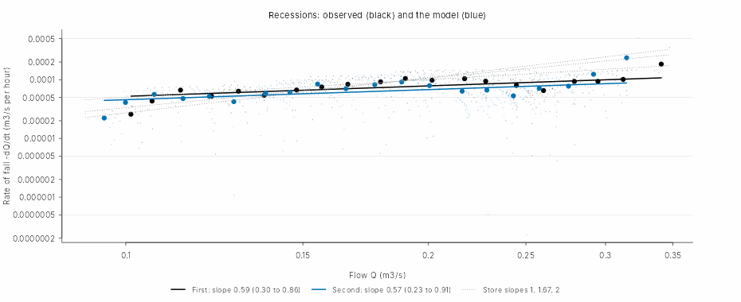
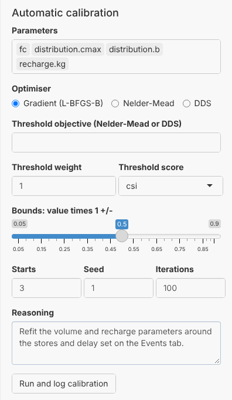
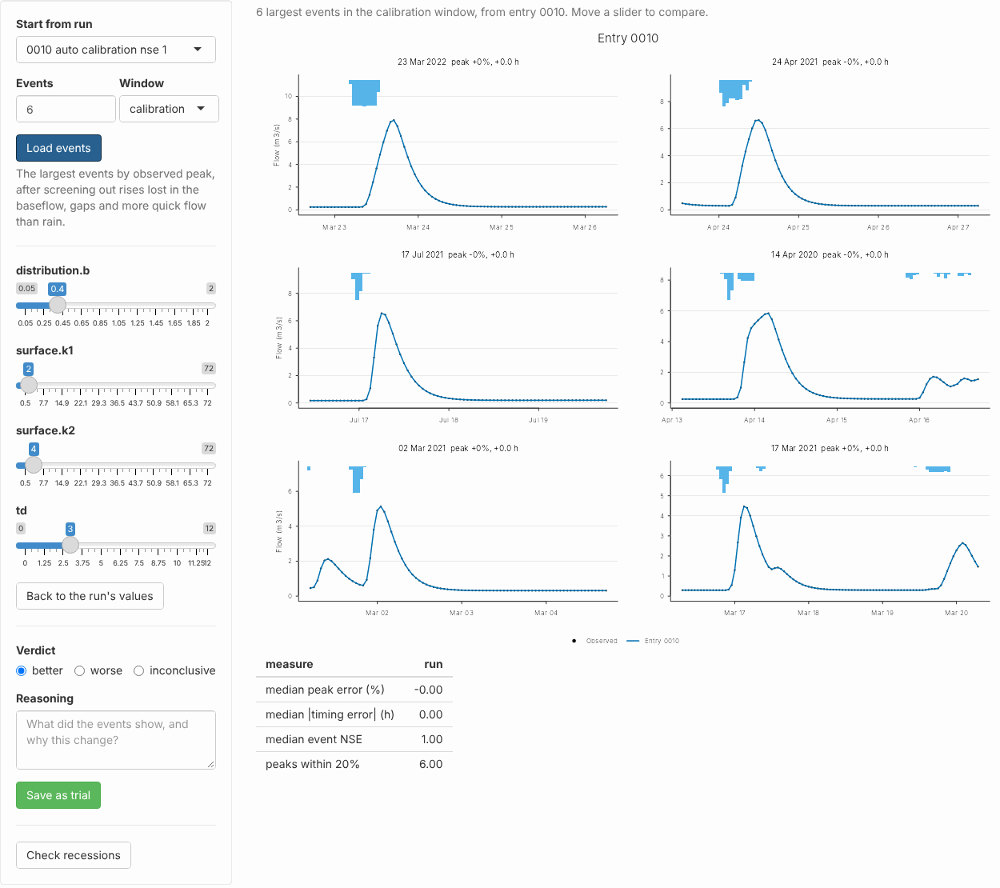
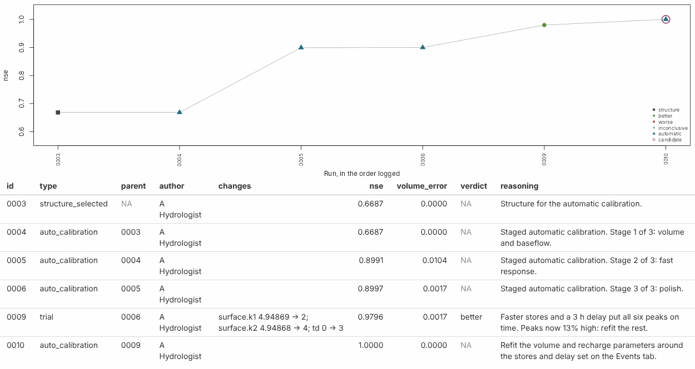
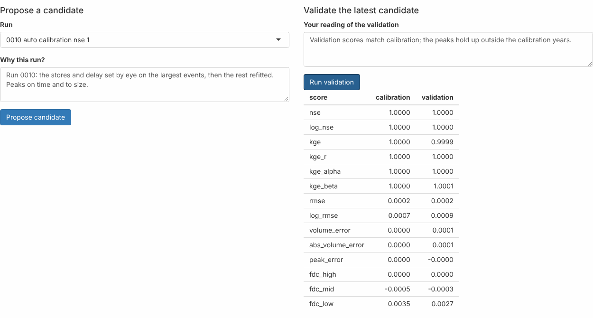

Tailoring calibration to the largest events in the app
pdmS7 documentation
Source:vignettes/app-events.Rmd
app-events.RmdA model can score well over a whole record and still get the floods wrong. NSE weighs time steps, not events: the long recessions between storms outweigh the few hours around each peak, so a calibration can buy a good score with peaks that are low and early. For flood forecasting those few hours are the point.
The Events tab of calibration_app() puts the largest
floods of the record on screen, next to sliders for the parameters that
shape them. Move a slider and the floods redraw at once. When you have a
setting you believe, you save it to the project log as a trial, with
your verdict and your reasons, and carry on from there: refit the rest,
propose a candidate, validate it, sign it off. Every step is written to
the log, so a reviewer later sees what you changed, what it did, and
why.
This guide follows one project through that path, with screenshots of each step.
| Step | Tab | What you do |
|---|---|---|
| 1. Look | Events | Load the largest events of the latest run and read the errors |
| 2. Adjust | Events | Move the surface stores and the time delay until the peaks sit right |
| 3. Record | Events | Save the setting as a trial, with a verdict and reasons |
| 4. Check | Events | Check that the recessions still match |
| 5. Refit | Trial | Refit the other parameters, starting from the trial |
| 6. Confirm | Events | Load the events again from the refitted run |
| 7. Propose | History | Compare the runs, propose the candidate and validate it |
| 8. Sign off | Sign-off | Final test, report and sign-off, as for any candidate |
The project
The project here is a synthetic catchment of 25 km², four years of
hourly rain and flow, made with synthetic_rain() and the
standard model. Its fast response is a cascade of two stores of 2 and 4
hours, after a delay of 3 hours. Because the record is synthetic, the
true parameters are known, and you can see whether a change moves
towards them.
calibrate_project() calibrated it in three stages,
starting from the standard preset with no delay. The result scores well:
NSE 0.90 over the calibration window, 0.89 in validation. Most
calibrators would stop there.
To open the app on a project:
library(pdmS7)
options(pdmS7.user = "A Hydrologist", pdmS7.role = "custodian")
shiny::runApp(calibration_app("demo-brook"))Click Open project, then the Events tab.
1. Look at the largest events
On the left, Start from run picks the run to examine; it starts on the latest. Events sets how many to show, largest observed peak first, and Window where their peaks must lie: in the calibration years, the validation years, or anywhere. Load events finds them.
The events are found with find_events() and then
screened with screen_events(), which drops rises too small
to stand out from the baseflow, events broken by gaps in the flow, and
events that shed more quick flow than their rain could supply. A flood
that the rain gauges missed would otherwise pull the calibration towards
nonsense.

The six largest events in the calibration window, from the last stage of the automatic calibration. Dots: observed flow. Blue: the run. Bars: the rain.
Each panel title gives the date of the peak, the peak error and the timing error. A negative peak error is a peak too low; a negative timing error is a peak too early. The table beneath gives the medians over all the events.
The picture is plain. Every peak is low, by 10% to 30%, and every
peak comes 1 to 2 hours early. The rise starts too soon and climbs too
slowly. Only three of the six peaks are within 20%. Look at the sliders
and the reason is there too: the time delay td is 0, and
both surface stores have drifted to about 4.9 hours. With no delay, the
model must start rising as soon as the rain falls; slow stores then hold
the peak back to roughly the right time and flatten it on the way. Over
the whole record that compromise costs little. On the floods it is
wrong.
How many events? Six to ten is a good start: enough that one odd storm cannot steer you, few enough to read every panel. Use the calibration window to adjust. Use the validation window to look, never to adjust: an event you tuned on can no longer test the model.
2. Adjust the sliders
The sliders cover the parameters that shape a flood: the surface
stores (surface.k1 and surface.k2 here), the
store shape b where the structure has one, and the time
delay td. Each runs over its calibration bounds;
td runs from 0 to 12 hours. A slider starts at the run’s
value, rounded to its step. That rounding alone does not count as a
change.
Moving a slider reruns the events and draws the new flow in orange beside the old.

The same events with surface stores of 2 and 4 hours and a 3 hour delay. Orange: the trial.
With the stores at 2 and 4 hours and a delay of 3, every peak is on time, the median event NSE rises from 0.86 to 0.97, and all six peaks are within 20%. The panel titles give the change for each event: the 23 March 2022 flood goes from 19% low and 2 hours early to 15% high and on time.
The peaks now overshoot by about 13%. That is expected, and it is not a reason to back off the stores. The other parameters, the soil store and the recharge, were fitted around the slow stores; change the stores alone and the rest is out of step. Step 5 fixes that.
Why it is quick. The tab runs the record once, when
the events load, and saves the state of every store just before each
event. A change to the surface stores or the delay reruns only the
events, each from its saved state, which takes a fraction of a second. A
change to b reaches the soil store, so the state before
every event changes; the tab then reruns the whole record and says so
above the plots. Back to the run’s values resets every
slider.
3. Record the trial
When the floods look right, say so. Choose a Verdict, write your Reasoning, and click Save as trial.

The verdict and the reasons, ready to save.
The trial is written to the project log exactly as a trial on the Trial tab is: its parent run, each parameter with its old and new value, the scores over the whole calibration window, your verdict and your reasoning, and your name and role from the bar at the top. Only the sliders you moved are recorded. Here the whole-window NSE rises from 0.90 to 0.98: the change that fixed the floods improved the record as a whole.
Write the reasons for a reader who was not there. “Faster stores and a 3 h delay put all six peaks on time” says what you saw; “peaks now 13% high: refit the rest” says what comes next.
4. Check the recessions
Faster stores change how the river empties after each flood.
Check recessions runs recession_analysis()
on the observed flow and on the model with the sliders as they stand,
and draws both.

How fast the flow falls against how high it is, from dry spells: observed in black, the trial in blue.
The two clouds and their fitted slopes lie together, 0.59 observed against 0.57 modelled, so the trial has not spoiled the recessions. If the blue points had fallen away from the black, the stores would be draining the river too fast or too slowly between storms, whatever the peaks showed. Do not read the slope itself as the type of groundwater store; Getting the floods right explains why.
5. Refit the rest
On the Trial tab, set Start from
run to the trial, 0009. Under Automatic
calibration, choose the parameters to refit: here the soil
store’s fc, distribution.cmax and
distribution.b, and the recharge recharge.kg.
Leave the surface stores and the delay out, so the search keeps what you
set by eye.

A refit of the volume and recharge parameters, starting from the trial.
Bounds sets how far each parameter may move, as a fraction of its value: 0.5 lets each move by half either way. Starts runs the search from several points and keeps the best. Run and log calibration writes the result to the log as a new run whose parent is the trial.
6. Confirm on the events
Back on the Events tab, load the events again, this time from the refitted run, 0010.

The six events from the refitted run.
The peaks are on time and the right size. This is synthetic data, made with the same model, so the refit lands on the true parameters exactly and every score reaches 1. A real record will not be so obliging: expect the peaks to improve, not to vanish into the observations, and expect to go round steps 2 to 6 more than once.
7. Compare, propose and validate
The History tab shows every run in the order logged, with its score, and the table of trials beneath, with the changes and the reasons.

The path of the calibration: the structure (square), the automatic stages (triangles), the trial saved from the Events tab (dot, a better verdict), and the refit. The candidate is ringed.
Below the table, Compare draws two runs over the whole record with their scores side by side. Comparing the trial with the refit shows the overshoot gone: KGE’s variability term falls from 1.14 back to 1.
Then propose the run as the candidate, with the reasons, and run the validation.

The refitted run proposed as the candidate and validated.
Validation scores the candidate on years it was never fitted to. If the peaks hold up there, the change was real, not a fit to six storms.
8. Test and sign off
From here the candidate goes the same way as any other: the final test on the held-back years, if any were registered, then the report and the sign-off on the Report and Sign-off tabs. The report shows the trial and its reasons in the calibration path. A steward reading it sees that the automatic calibration left the floods low and early, that a hydrologist moved the stores and the delay, why, and what the change did to every score.
The same in code
Everything on the Events tab is a function you can call yourself:
wb <- event_workbench("demo-brook", "0006", n = 6)
faster <- workbench_try(wb, c(surface.k1 = 2, surface.k2 = 4, td = 3))
plot_workbench(wb, faster)
faster$scores
log_trial("demo-brook", "0006", c(surface.k1 = 2, surface.k2 = 4, td = 3), "better",
"Faster stores and a 3 h delay put all six peaks on time. Peaks now 13% high.")The app or the events stage?
The automatic calibration can do much of this itself.
pdm_stages(config, events = TRUE) adds a fourth stage that
refits the surface stores, b and the delay on the largest
events, scored on event NSE, peak error and timing error (Automatic calibration from start to
finish). Run that first. The Events tab is for what a search cannot
do: look at the floods, judge whether a change is right for the reasons
you think, notice an event the rain gauges got wrong, and write down
why. Use it after the events stage, to check it, or instead of it when a
forecaster needs to see and own the choice.
Pitfalls
- Tuning on too few events. Six storms can share a season and a cause. Before you save, try twice as many and see if the change still helps.
- Tuning on the validation years. Look at them, but adjust on the calibration window only.
- Chasing a bad event. If one flood will not fit whatever you do, check its rain and its flow before you blame the model. Checking the data and the events shows how.
- Saving without reasons. A trial with no reasoning tells a reviewer nothing. The log keeps the numbers; only you can give the why.
- Stopping at the trial. A trial changes a few parameters by hand. Refit the rest around it before you propose it.
Where to go next
- Getting the floods right: why whole-record scores miss the floods, and the event tools behind this tab.
- Checking the data and the events: checks to run before trusting any event.
- Calibration records: what each entry records, and the rest of the app.
- Calibrating a catchment from start to finish: the stages, including the events stage.